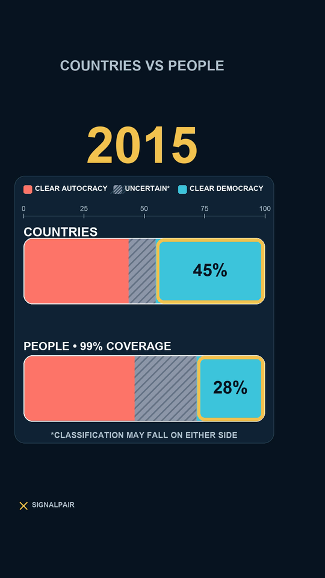

Each eligible political unit counts once
Cada unidade política elegível conta uma vez
- Unit
- Unidade
- V-Dem unit-year
- Weight
- Peso
- Equal
- Source
- Fonte
- V-Dem v16

EPISODE 02 • REFERENCE PAGE
EPISÓDIO 02 • PÁGINA DE REFERÊNCIA
Count every eligible political unit once. Then count every person with observed population once. The two views do not tell the same story—and neither is a measure of individual preference.
Conte cada unidade política elegível uma vez. Depois conte uma vez cada pessoa com população observada. As duas visões não contam a mesma história—e nenhuma mede preferência individual.
Research question
Pergunta de pesquisa
The exact unit denominator is eligible V-Dem political units. “Countries” is the Short's plain-language shorthand, not a universal legal list of sovereign states.
O denominador exato usa unidades políticas elegíveis do V-Dem. “Países” é a simplificação do Short, não uma lista jurídica universal de Estados soberanos.
Research status
Status da pesquisa
The hypotheses were data-informed after preliminary inspection. This is not an independently confirmed or preregistered discovery.
As hipóteses foram informadas pelos dados após inspeção preliminar. Não se trata de descoberta confirmada de forma independente nem pré-registrada.
Two denominators
Dois denominadores
Classification
Classificação
v2x_regime_amb 0–3
v2x_regime_amb 4–5
v2x_regime_amb 6–9
Q0 keeps the uncertain category separate; Q1–Q3 test alternate allocations.
Q0 mantém a categoria incerta separada; Q1–Q3 testam alocações alternativas.
Observed endpoints
Extremos observados

In 1973, clear democracy represented 19.62% of eligible units and 35.26% of observed population. In 2025, it represented 41.34% of eligible units and 21.94% of observed population.
Em 1973, democracia clara representava 19,62% das unidades elegíveis e 35,26% da população observada. Em 2025, representava 41,34% das unidades elegíveis e 21,94% da população observada.
These are compositions, not preferences. Residence under a classified regime does not show what individuals believe or choose.
São composições, não preferências. Residir sob um regime classificado não mostra o que indivíduos acreditam ou escolhem.
eligible units → observed people; gap +15.64 pp
unidades elegíveis → pessoas observadas; diferença +15,64 pp
gap −20.49 pp; co-housed endpoint gate
diferença −20,49 pp; gate co-hospedado
gap −19.40 pp; audited WDI extension
diferença −19,40 pp; extensão WDI auditada
Non-linear path
Trajetória não linear
The clear-democracy population-minus-unit gap changes from positive to negative.
A diferença população menos unidades em democracia clara passa de positiva para negativa.
The gap changes back from negative to positive.
A diferença retorna de negativa para positiva.
The gap becomes negative and remains negative through 2025.
A diferença se torna negativa e permanece negativa até 2025.
This is not a smooth 52-year decline. The 1973–1975 adjacent-year stability check fails.
Não se trata de uma queda contínua de 52 anos. O teste de estabilidade 1973–1975 falha.
Coverage and sensitivity
Cobertura e sensibilidade
1973: 87.33% · 2024: 98.82% · 2025: 98.45%
Endpoint signs survive Q0–Q3.
Os sinais dos extremos sobrevivem a Q0–Q3.
Conservative allocations preserve endpoint signs; these are not confidence intervals.
Alocações conservadoras preservam os sinais; não são intervalos de confiança.
No single removal flips the endpoint sign, although concentration still matters.
Nenhuma remoção isolada inverte o sinal dos extremos, embora a concentração importe.
Concentration
Concentração
India has the largest population-weighted influence at the endpoints and transitions because it contains a large share of observed population. That is arithmetic influence, not historical causation, blame or political preference.
A Índia tem a maior influência ponderada pela população nos extremos e transições porque contém grande parcela da população observada. Isso é influência aritmética, não causalidade histórica, culpa ou preferência política.
The analysis does not identify why any unit changed classification or why the global composition crossed in a given year.
A análise não identifica por que uma unidade mudou de classificação nem por que a composição global cruzou em determinado ano.
Limitations
Limitações
No historical causal design identifies why the compositions or crossings changed.
Nenhum desenho causal histórico identifica por que as composições ou cruzamentos mudaram.
Population under a regime is not a measure of preference, support, choice or lived experience.
População sob um regime não mede preferência, apoio, escolha ou experiência vivida.
The gap changes sign in 1975, 1978 and 2015; a smooth-reversal description is unsupported.
A diferença muda de sinal em 1975, 1978 e 2015; uma reversão contínua não é sustentada.
PEOPLE uses observed population only. Missing population is excluded, never set to zero.
PESSOAS usa somente população observada. População ausente é excluída, nunca convertida em zero.
The exact universe is eligible V-Dem political units, not a universal legal country list.
O universo exato são unidades políticas elegíveis do V-Dem, não uma lista jurídica universal de países.
V-Dem population controls 1973–2024; 2025 uses a separately audited World Bank WDI extension. The 2024 co-housed gate agrees in direction.
A população V-Dem controla 1973–2024; 2025 usa extensão WDI auditada separadamente. O gate co-hospedado de 2024 concorda em direção.
Values 4–5 remain visibly uncertain in Q0. Alternate allocations preserve endpoint signs but do not eliminate taxonomy uncertainty.
Valores 4–5 permanecem visivelmente incertos em Q0. Alocações alternativas preservam os sinais, mas não eliminam a incerteza da taxonomia.
Preliminary values were inspected before formal rules were frozen. This is post-exploratory, not blind confirmation.
Valores preliminares foram inspecionados antes de congelar as regras formais. É pós-exploratória, não confirmação cega.
Large units carry large arithmetic weight in PEOPLE. Influence is not causation or blame.
Unidades grandes recebem grande peso aritmético em PESSOAS. Influência não é causalidade nem culpa.
An external regime classification and future source-revision stability were not tested.
Uma classificação externa de regimes e a estabilidade diante de futuras revisões da fonte não foram testadas.
Sources, files and versions
Fontes, arquivos e versões
Version record
Registro de versão
Initial bilingual reference page built from the frozen V-006 contract. Source cutoff: V-Dem v16 plus the audited 2025 WDI population extension.
Página bilíngue inicial construída a partir do contrato V-006 congelado. Corte das fontes: V-Dem v16 mais extensão populacional WDI 2025 auditada.
Material corrections create a new version, new hashes and a new owner gate. The public page is never silently replaced.
Correções materiais criam nova versão, novos hashes e novo gate do proprietário. A página pública nunca é substituída silenciosamente.